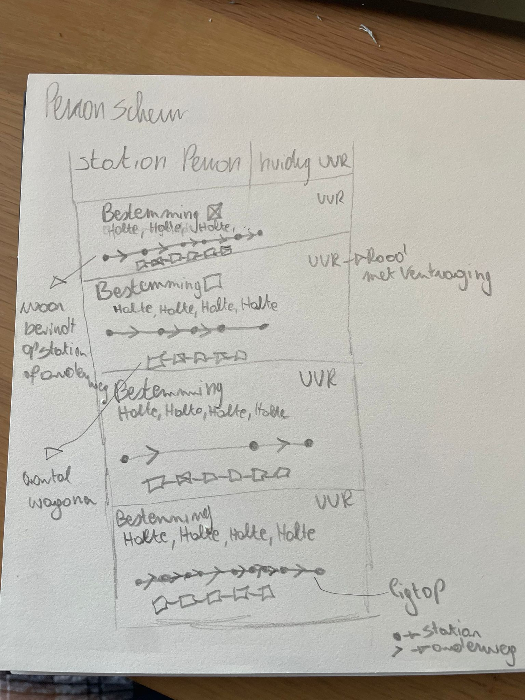
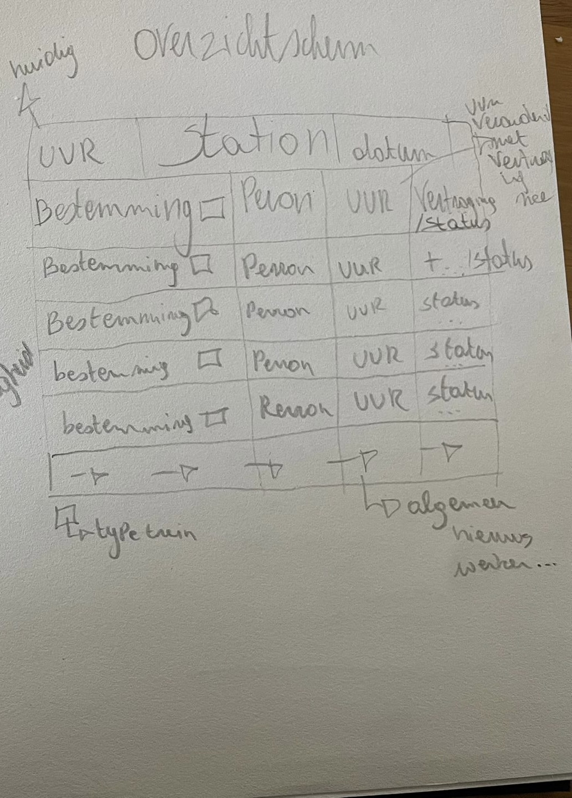
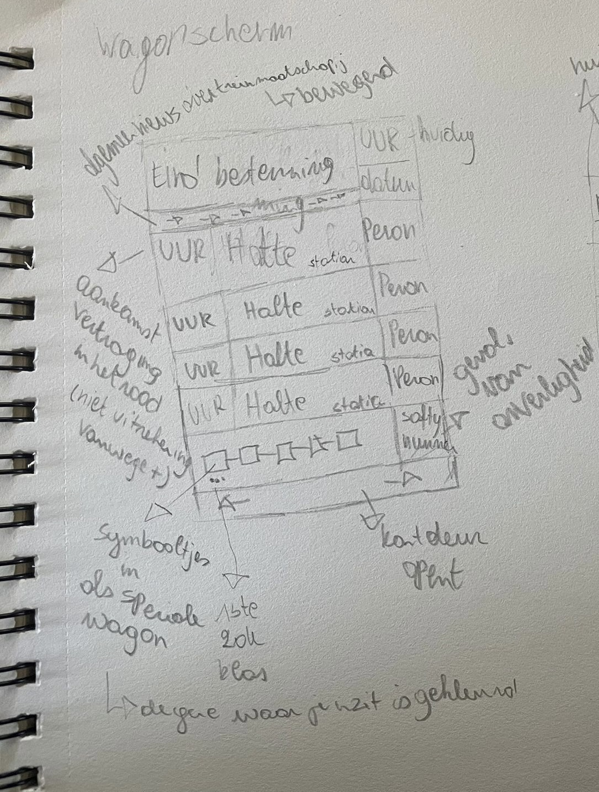

Ik heb ervoor gekozen om bij de bestemming niet alleen de haltes te zetten maar ook een lijn met bolletjes en pijltjes, zodat je kan zien op het perron war de trein ongeveer al zit. (Bolletje: is een station pijltje: is onderweg naar het volgende station).
Het station waar je bent staat er op en op welk perron je jezelf bevindt.
Ik heb de wagons er ook onder gezet dat je op voorhand kan zien hoeveel wagons er zijn (of de trein kort of lang is) zo kan je ongeveer ook inschatten waar je kan gaan staan.
Het huidig uur staat erop, de uren van hoe laat de trein aankomt. Als er vertraging is veranderd het uur naar de kleur rood, maar in plaats van er + bij te zetten rekent die zelf hoe laat de trein zou aankomen met de vertraging (zodat je het zelf niet moet uitrekenen).

Het huidig uur, station waar je jezelf bevindt en de datum heb ik vanboven staan, omdat het wel cruciale factoren zijn.
Bestemming en welke type trein het is staat als eerst, dan heb je je perron, het uur dat de trein aankomt dan hebben we de status waar opkomt te staan dat die aankom, aan het perron is, of als die afgeschaft is.
Helemaal vanonder heb ik een lopend scherm waar nieuws opkomt over werken bij de sporen, stakingen,… .

Vanboven staat de eindbestemming van de trein, het huidige uur en de datum.
Daaronder weer een lopende band waar nieuws op komt over eventuele problemen bij de trein (werken bij spoor/station, stakingen, …) .
Het uur van de aankomst bij de halte, de halte en dan het perron dat je op aankomt.
De wagons zodat je weet in welke je zit en waar je andere dingen kunt vinden.
Safety nummer, voor als je niet veilig voelt in de trein vanwege omstandigheden (een vriendin van mij had me dit meegegeven ze voelt zich veel veiliger wetende dat ze iets kan doen moest ze ooit in een onveilige situatie terecht komen).
Een pijl naar rechts en links zodat je weet langs welke kant de deuren opengaan gaan, zo sta je direct aan de juist kan om uit stappen.